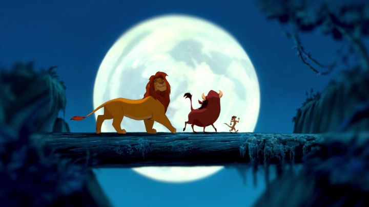

"The Lion King," arguably the last great film of the Disney renaissance of the 1990's, might be Disney's most celebrated animated film of all time. And that feels appropriate. After all, this wasn't simply a fairy tale of Princesses, it was a story of Kings, loosely based on Shakespeare's "Hamlet," and perhaps partially on the successful anime "Kimba the White Lion" by Osamu Tezuka in Japan.I was surprised to read that Jeffrey Katzenberg had low hopes for the movie, secretly encouraging Disney's best staff to focus on the later film "Pocahontas" instead. "The Lion King" would be one of the last movies Katzenberg oversaw at Disney before leaving to co-found Dreamworks' new animation division. And based on further reading, the animators were probably happy to see him leave: for several years, he would make massive edits and cuts based on test screenings, demand script re-writes at the last minute, all while enforcing the ambitious goal of releasing a new Disney movie every single year. These pratices reportedly left the animation staff exhausted. But it's hard to deny that Disney's best movies, after a grim downturn in the 1980's, occurred under Katzenberg's watch, and upheld the division's profitability for many years. "The Lion King" would be one of the most successful, spawning a successful Broadway stage adaptation, multiple home-video sequels (which are actually much better than you'd think), and re-releases through IMAX, 3D-conversion, live-action remakes, and so on. And I do believe that the success of the movie hinges on this being a largely original story, starring talking animals again instead of people, and for depicting a version of royalty without the cliche "save-the-Princess" plot. Being set in Africa, the movie is also viewed proudly for African culture. However, rewafching the movie as an adult, I grew increasingly annoyed at adult Simba's "beach-bum" hair and lifestyle with Timon and Pumba, and I can't help but observe how explicitly leaving the Hyena packs out of the Pride Lands is an example of racism and anti-immigration sentiment, further compounded by how their abundant presence suddenly ravages the prosperity of the land. I'm sure we'll get a "cultural-warning" one day, but for now, best not to read too much into it and just enjoy the movie. The movie opens with the birth of Simba, son of lion and king Mufasa and his queen Sarabi. They are the natural kings of the African plains, and all creatures great and small come to witness the coming of their new Prince. But in the shadows, Scar, Mufasa's brother, is frustrated that a new heir has taken his last chance at ever becoming king himself. He plots for both Simba and Mufasa to be killed in order to usurp the throne. Simba, being a young boy born into royalty, is cocky and over-confident, and too trusting of his Uncle Scar. After multiple attempts, Scar successfully kills Mufasa, staged in a way that Simba feels he's responsible, and upon Scar's words ("run, and never return"), he runs away from home in shame and guilt. He finds a quiet paradise, with a meerkat and warthog named Timon and Pumba, before eventually being discovered alive and faced with the choice of returning to Pride Rock to reclaim his rightful throne, saving the land from ruin under the mismanagement of King Scar.  It's a great story, though it helps that I personally love a good "rightful heir" tale of royalty. Both Mufasa, a regal but loving dad, and Scar, a delicious villain, help sell the plot. I liked Nala's role, as Simba's childhood friend and equal, and natural love interest when the two have grown past puberty. The place where I feel torn is with Simba himself, being a character in desparate need of growth and maturity. And by the end, he has grown, but we're stuck with the worser versions of him, from the immature and spoiled child, to the lazy, shaggy adult, to the guilt-ridden Prince that hesitates going back to face his Pride. All versions of this Simba are disappointing, and part of the role of all the side characters is to knock him to his senses to move the plot forward. I suppose Hamlet had a similar arc, but he gets a lot more development compared to Simba's generic personality."The Lion King" has one of the best voice casts in Disney animation. I mean, James Earl Jones and Jeremy Irons as rival brothers for the throne?! What's better than that? But there's also Matthew Broderick as Simba, Nathan Lane as Timon, Rowan Atkinson as Zazu, and Whoppi Goldberg and Cheech Marin as two of the three lead hyenas. Unlike "Aladdin" before it, where Robin Williams was a big selling point for the movie, none of the actors outshine the movie itself in "King." As a child, I didn't know who the actors were, or cared, even though I would have recognized Darth Vader, Mr. Bean and the woman from "The Sister Act" had I bothered to look. And that's the ideal balance for celebrity actors in an animated film, for them to be able to melt into the roles and not be distracting. The only gripes: Broderick as Simba is a litle empty, and Timon and Pumba's big personalities offset the movie's otherwise regal tone. And despite the African setting, most of the cast is white, a pretty big misstep (even though some other characters are purposely African-voiced). The movie generally looks beautiful, although with a lot of empty plains, both of the art relies on the character design and animation, which again showcases Disney's uncanny ability to be realistic to the animals, but also expressive and entertaining. There are some iconic image shots, like Pride Rock and shaman-baboon Rafiki raising baby Simba, or Scar singing "Be Prepared" in his green-lit hideaway, or the ghost of Mufasa addressing Simba from the night sky. The music numbers are either fun to sing, or truly inspring, like the opening theme "Circle of Life," and the quality of the songs explain why the Broadway production was so successful (having Time Rice and superstar Elton John contribute the songs, as well has Hans Zimmer for the score, helped a bit too). While production values are great throughout, it does feel like audio and voices got more attention than normal for a Disney movie. While "The Lion King" might not be as lavish as some of Disney's other fairy tales, it still earns it's place at the top of their animated list. Long live the King.
- "Ani" More reviews can be found at : https://2danicritic.github.io/ Previous review: review_The_Life_of_Guskou_Budori Next review: review_The_Little_Mermaid